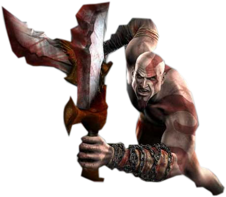
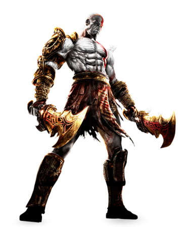

God of War: A Carnificina Agora Também na Mitológia Nórdica
God of War 1, 2 e 3

Quando foi lançado, God of War surpreendeu todo mundo pela qualidade e pela brutalidade. Os jogadores foram presentados com um game épico em que o protagonista tinha como objetivo derrotar um deus do Olimpo. Mal sabiam eles o que estava por vir…Já faz uma década desde que o primeiro título estrelado pelo boladão Kratos foi lançado. De lá para cá, foram sete jogos e três coleções reunindo alguns deles — todos fantásticos e um prato cheio para quem é fã de games de ação, pancadaria e mitologia grega.
God of War ganhou status de clássico muito rapidamente. Pouco tempo após seu lançamento, o jogo já era apontado como um dos melhores títulos de ação, inclusive novamente levando os holofotes para o gênero hack’n’slash, herdeiro dos beat’em ups dos anos 80 e 90. Em ambos, o objetivo é sentar a mão em todo mundo que aparece na tela, derrotar o chefão e matar a sede por sangue.
Só que God of War levou essa história de sede por sangue ao pé da letra. Desde o começo a série manteve a brutalidade e a sanguinolência como uma de suas principais características.Soldados humanos? Esmagados. Centauros? Desmembrados. Deuses mitológicos? Decapitados. E tudo graficamente retratado na telinha, com ossinhos e órgãos sendo espalhados por toda a Grécia Antiga.
Essa brutalidade toda converge com o tema da série: vingança, justamente o combustível do protagonista para sua saga, digamos, um pouco violenta. Ele, aliás, tornou-se um dos mais conhecidos personagens dos games, além de um dos mais brutais.Numa conta rápida, mais de 20 criaturas foram assassinadas pelo guerreiro que, como o próprio nome da série sugere, se torna o Deus da Guerra. Pela sua mão morrem: Gaia, titã-deusa da terra; Cronos, titã-deus do tempo; Perses, titã-deus da destruição; Zeus, o capo do Olimpo, e sua esposa Hera, deusa das mulheres e do casamento; Hefesto, Helios, Hermes, Hércules, Hades, Poseidon, Perseu, Teseu e o próprio deus da guerra original, Ares, só para citar alguns. O total de vítimas do branquelo é um número de 15 dígitos e totalmente impronunciável. Sobraram pouquíssimas divindades, entre elas Afrodite.
Enfim, toda a mitologia grega seria muito mais legal pela releitura de God of War. Mas o que de fato interessa: relembrar um pouco cada game da série. O primeiro, de 2005, é a busca de Kratos pela vingança contra Ares. Em God of War II (2007), Zeus dá de traíra e manda Kratos para o submundo, mas ele volta cheio de sangue no olho e começa a guerra entre titãs e deuses. Mas é em God of War III, de 2010, que o bicho começa a pegar mesmo e quando essa batalha atinge seu ápice, com o protagonista mandando todo mundo para o além.Dois games se passam antes disso tudo, God of War: Chains of Olympus (2008) e God of War: Ascension (2013), o mais recente deles, que mostram as origens de Kratos. No meio da saga há os eventos de God of War: Ghost of Sparta (2011) e God of War: Betrayal (2007), para celulares e o único lançado para uma plataforma que não seja da marca PlayStation.
PASSE O MOUSE SOBRE A IMAGEM E VEJA A EVOLUÇÃO DE KRATOS
God of War 4
Muitos anos após os eventos de God of War III, Kratos acabou no mundo da mitologia nórdica e agora tem um filho chamado Atreus. Ele deve lutar para sobreviver e ensinar seu filho a fazer o mesmo. Um mentor e protetor para ele, que busca o respeito de seu pai, Kratos deve dominar a raiva que o impulsionou por muitos anos. O jogo é uma nova direção para a série, não apenas por seu novo cenário mitológico, mas também por sua jogabilidade. Como Kratos perdeu suas infames lâminas duplas no final de God of War III, ele agora usa um machado de guerra mágico como arma principal, chamado Machado Leviatã. Para acompanhar o jogo, a Sony fez uma parceria com o Facebook para desenvolver um jogo baseado em texto intitulado God of War: A Call from the Wilds através do Facebook Messenger. Lançado em 1 de fevereiro de 2018, o conto segue Atreus em sua primeira aventura nas selvas nórdicas. Embora outros jogos não tenham sido oficialmente anunciados, Cory Barlog confirmou que esse título não será o último jogo do Kratos. Também foi revelado que jogos posteriores também seriam ambientados no ambiente nórdico, e incluirão Atreus.